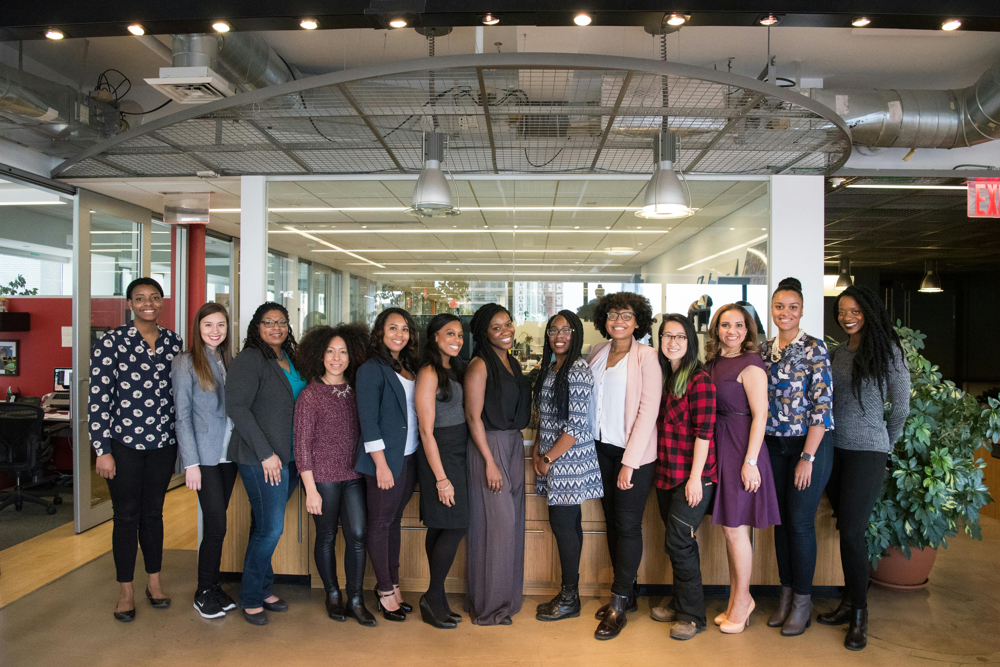

We are a company that was made up for a school project. This is week 6 project for foundation of web design and development. The point in this website is to have it designed like a news channel. That is why the home page is the fake current news going on, I was thinking about making this page about politics but I was worried about copyright stuff if I did that, so, I decided against that. I think this about page is just as effective for a news page since there are so many different news pages. An about page would help the user get to know the company a little better in my opinion.
This is where I would put background information to the company and explain how the company came about. I think this would be a good section for a mission statement and what the companies goals are. I need more to be typed here to get the look of the page a little close to how I want it to look. Right now the look of the website is more important than the acctual content since this is not a real company website that I am creating. This is just for fun!

Location:
123 W Fake Dr
Copyright March 2024